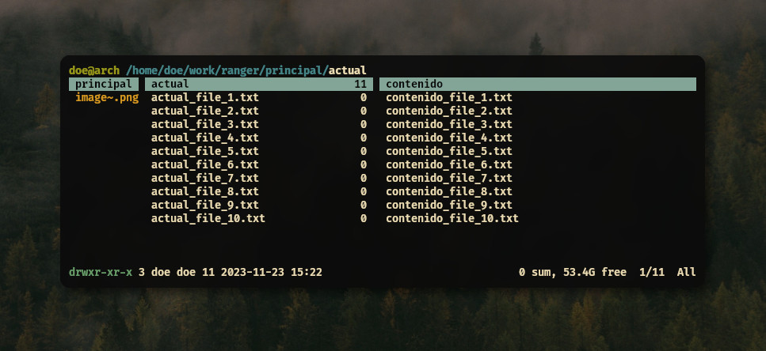
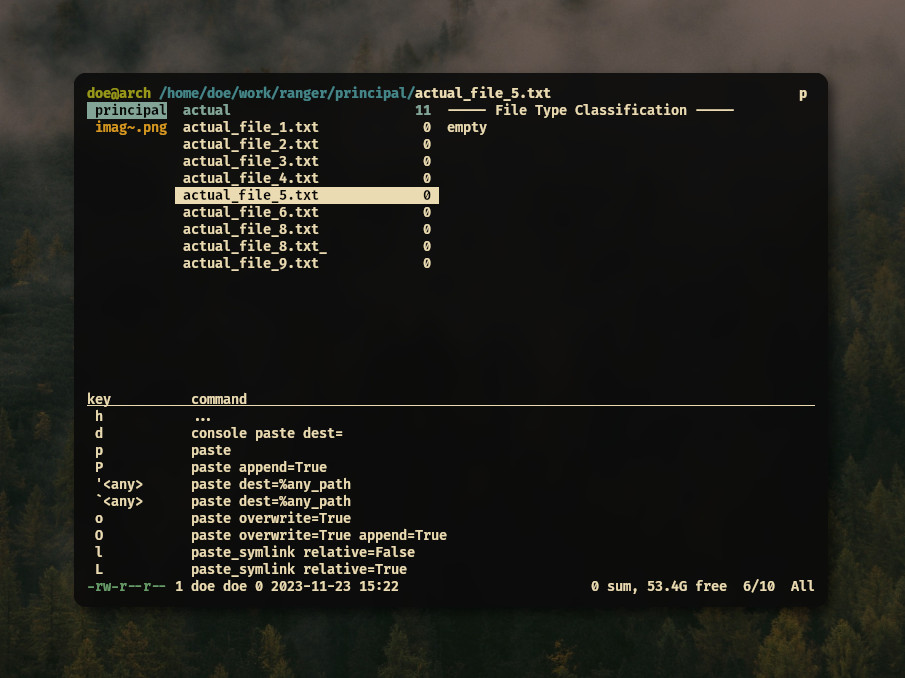
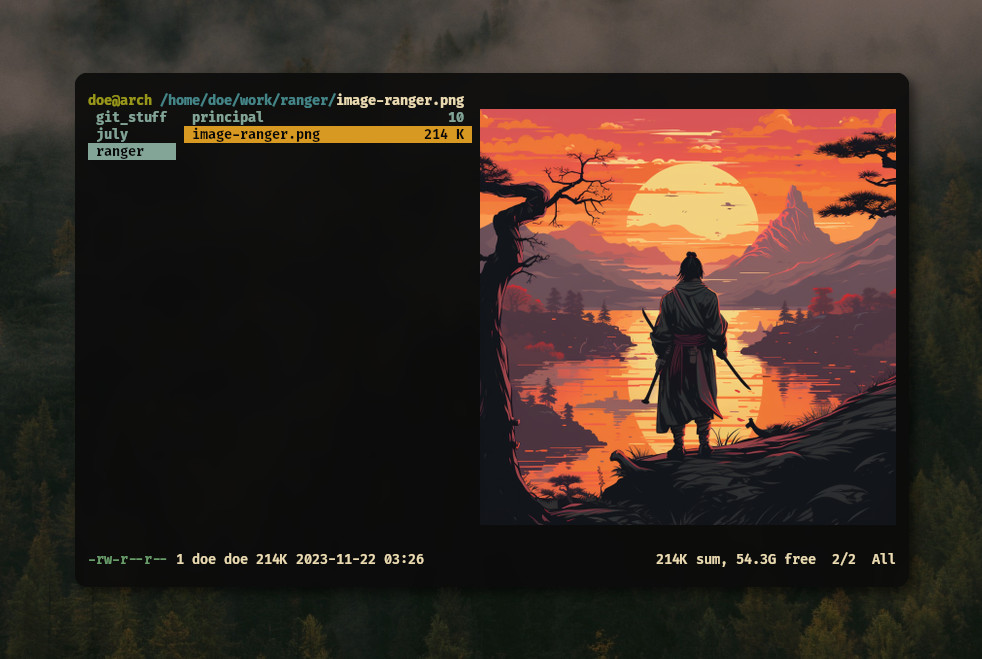

Ranger - Administra tus archivos desde la terminal
Escrito por: Tony - 23/11/2023
Para la mayoría de usuarios usar los
comandos ls y cat para visualizar los
archivos y su contenido o cp y mv para
copiarlos, moverlos o renombrarlos es más que suficiente, pero hoy
vamos a ver una menera diferente y minimalista de hacerlo con ranger.
En esta breve guía veremos lo básico como su instalación, interfaz, atajos y configuración.
Ranger es un administrador de archivos minimalista basado en texto,
escrito en Python y que usa combinaciones de teclas basadas en VI, así
que sí estás familiarizado con Vim seguramente te resultara sencillo acoplarte a su uso. Además de esto
cuenta con rifle un poderoso lanzador de archivos, cuyo
punto fuerte es que puede determinar automáticamente los tipos de
archivos y con eso elegir que programa usar para abrirlos, sin
necesidad de nuestra interacción.
Instalación
Aquí podrán encontrar varias formas de instalarlo dependiendo de su distribución:
Arch Linux:
sudo pacman -Sy ranger
Debian / Ubuntu:
sudo apt install ranger
Fedora:
sudo dnf install ranger
Gentoo:
sudo emerge -U app-misc/ranger
PyPI:
pip install ranger-fm
Si quieres instalarlo manualmente clonando el repositorio, puedes revisar el proceso aquí
Interfaz
La ventana principal muestra de manera predeterminada tres columnas (columnas de Miller):
- La columna de la izquierda muestra el directorio principal, con el directorio actual resaltado.
- La columna central muestra el directorio actual.
- La columna derecha muestra una previsualización del directorio seleccionado o de los archivos seleccionados.
En la parte superior podremos encontrar la ruta del directorio actual y en la parte inferior podremos ver los atributos del archivo actual.
Si ya tienes experiencia con Vim, entonces ya conoces algunas formas
de trabajar con ranger, como usar las teclas hjkl para
moverte entre directrios y archivos, así también comparte algunos
modismos con Vim. Por
ejemplo: yy (copiar), pp (pegar), dd (cortar).
Puedes usar funciones más complejas desde la línea de comandos
usando : como en Vim.
Navegando en ranger
Como mencione anteriormente podemos usar las teclas de movmimiento de Vim o las flechas de movimiento:
k --- arriba
h l --- izquierda o regresar / derecha o entrar
j --- abajo
La tecla l sirve para entrar a directorios, para ejecutar
programas, abrir imágenes, etc.
Se puede usar i para inspeccionar un archivo, por lo que
se pondra en pantalla completa, nos podremos desplazar por el y
podemos volver a presionar i para salir de la inspección.
Podemos usar también q para salir de la inspección, o
para salir de una pestaña activa o para salir del mismo ranger.
Atajos de teclado y sugerencias
Se pueden hacer muchos comandos utilizando sus atajos de teclado, haciendo uso de las sugerencias. Las sugerencias se muestran cada vez que al presionar una tecla hay multiples acciones disponibles como:
-
gpara la navegación y pestañas,rpara el comando:open_width,ypara copiar ydpara cortar/eliminar. pparapaste(pegar).opara ordenar..para filter_stack.-
zpara cmabiar ajustes,upara deshacer. Mpara linemode.-
+,-,=para establecer los derechos de acceso a archivos.
Las sugerencias consisten en teclas del lado izquierdo y su comando correspondiente de lado derecho
Pestañas
Si quieres separar algunos directorios a la hora de trabajar, puedes
usar la opción de crear una pestaña dedicada al directorio que elijas.
Las pestañas están numeradas. Para cambiar de pestaña, puedes
presionar Alt-N, donde N es el número de
pestaña a la que quieres moverte, si esta pestaña no existe, será
creada, también puedes
usar Tab o Shift-Tab para moverte entre
ellas y las puedes cerrar con q.
Configuración básica
Ranger usa 4 archivos de configuración principales:
-
rc.confes utilizado para varias opciones de configuración y atajos de teclado a funciones (más adelante veremos como habilitar la previsualización de imágenes). -
rifle.confdecide qué programa se utiliza para abrir los archivos. -
scope.shes un shell script utilizado para generar previsualizaciones para varios tipos de archivos. -
commands.pycontiene varias implementaciones de funciones, escritas en Python, utilizadas para modificar el comportamiento derangere implementar tus propios comandos.
Puedes utilizar:
ranger --copy-config=all
para copiar todos los archivos de configuración predeterminados a la
ruta ~/.config/ranger, puedes
reemplazar all por rc, rifle, scope y commands cualquiera de los archivos que quieras copiar
Al final, deberías tener estos archivos en
tu ~/.config/ranger:
commands.py rc.conf rifle.conf scope.sh
Se recomienda solo añadir tus opciones y atajos al
archivo rc.conf, en lugar de hacer una copia completa de
la configuración predeterminada.
Previsualizaciones
Las previsualizaciones de nuestros archivos están ofrecidas
por scope.sh. Es un shell script normal y su
comportamiento está bien documentado en los propios comentarios del
archivo.
Se puede reemplazar scope.sh por un script en otros lenguajes o binarios nuestros. Solo debe seguir las convenciones de llamada de scope.sh y sus códigos de retorno.
Previsualizar imágenes
Como ultima sección, veremos como podemos previsualizar imágenes desde ranger. Sí, se pueden ver imágenes en ranger, aunque solo está disponible para algunas terminales, en el caso de este blog, se usó Kitty.

Ranger admite previsualizaciones fiables en algunas terminales
como urxvt,iTerm2,Kitty o Terminology.
Para habilitarlo, dirígete a tu archivo rc.conf y añade
las siguientes líneas:
set preview_images true
set preview_images_method kitty
Con esto ya podríamos ver nuestras previsualizaciones, si quieres ver como hacerlo en las otras terminales, puedes verlo aquí
Y eso sería todo, con esta guía básica deberías tener las bases para usar ranger, cubriré más temas en futuras entregas, gracias por leer.